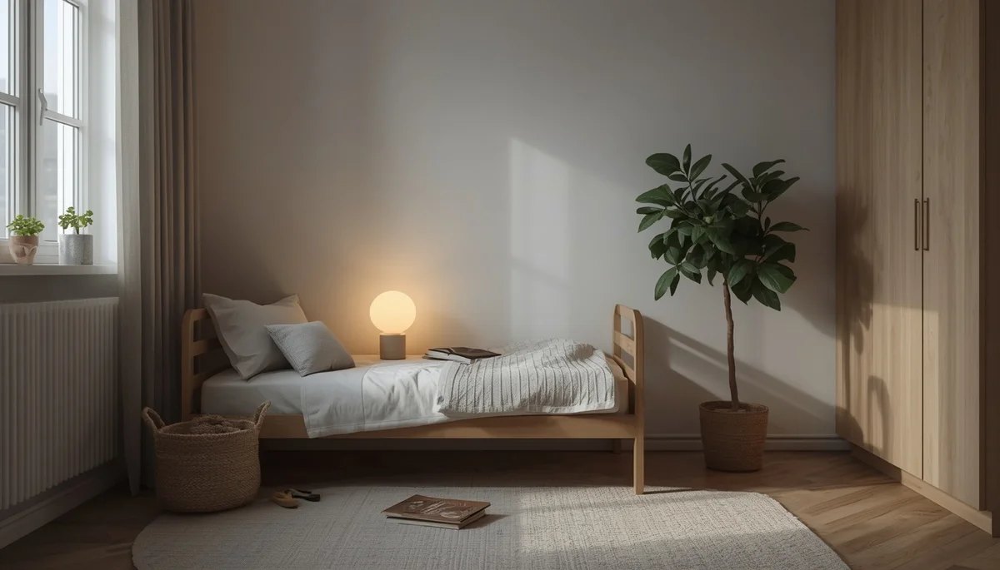

Radiaciones y campos electromagnéticos en el hogar
El entorno moderno está rodeado de redes inalámbricas, dispositivos de comunicación y electrodomésticos que generan campos electromagnéticos de baja y alta frecuencia de forma constante. Debido a su menor masa corporal y a un sistema nervioso en plena maduración, la infancia resulta especialmente sensible a los factores ambientales invisibles, por lo que conviene adoptar medidas de precaución razonables en los espacios de descanso.
Higiene digital y desconexión en el dormitorio
La habitación infantil debería mantenerse lo más libre posible de fuentes de radiación inalámbrica durante las horas nocturnas. Apagar el router Wi-Fi por la noche, evitar la colocación de teléfonos móviles, tabletas o bases de carga cerca de la cama y priorizar las conexiones por cable ethernet reduce drásticamente la exposición acumulada durante el sueño.
Distancia prudente con los aparatos eléctricos
Los radiadores eléctricos, las lámparas de mesita de noche con transformadores integrados y los despertadores enchufados generan campos magnéticos locales intensos a corta distancia. Situar estos equipos a más de un metro de la zona donde duermen los menores previene una interferencia continua sobre su descanso.
"Establecer pautas de desconexión inalámbrica en el dormitorio protege el descanso profundo y respeta los ritmos biológicos naturales de la infancia."
Uso responsable de dispositivos móviles en la infancia
Cuando los menores utilicen pantallas o herramientas digitales, es preferible mantener el modo avión activado si no se requiere conexión a internet, o bien utilizar soportes que alejen los aparatos directamente del cuerpo, fomentando hábitos tecnológicos saludables desde una perspectiva preventiva.
➔ Volver al índice de Salud ambiental infantil